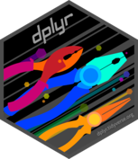
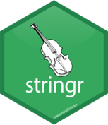
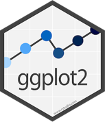
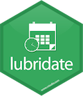

Introduction
Lorsqu’il s’agit de travailler avec des données, R est l’un des langages de programmation les plus populaires et les plus puissants disponibles aujourd’hui. Avec sa vaste communauté de développeurs, R propose des milliers de packages pour aider à résoudre une grande variété de problèmes de traitement et d’analyse de données. Cependant, avec autant de packages disponibles, il peut être difficile de savoir par où commencer. Dans cet article, je vais vous présenter quelques-unes des bibliothèques R les plus populaires et les plus utiles pour vous aider à démarrer dans l’analyse de données avec R. Que vous soyez un débutant ou un utilisateur chevronné de R, vous devriez trouver quelque chose d’intéressant dans cette liste.
dplyr

dplyr est LA library à connaitre absolument ! Elle va servir à la manipulation des données.
Il faut retenir ces fonctions :
mutate(): Ajouter une nouvelle colonne à un dataframe
select(): Sélectionner des colonnes
filter(): Filtrer les lignes du dataframe
summarise(): Faire des agrégations de données
arrange(): Ordonne les données
En connaissant ces fonctions, on connait 70% de la manipulation de données avec R.
stringr

stringr est la library à connaitre lorsque l’on veut manipuler du texte.
Il faut retenir ces fonctions :
str_detect(): Détecte la présence d’un pattern.
str_count(): Compte le nombre de matchs.
str_subset(): Extrait le texte qui contient le pattern.
str_locate(): Donne la position d’un pattern.
str_extract(): Extrait le premier pattern trouvé.
str_replace(): Remplace le pattern par un nouveau.
str_split(): Sépare du texte en plusieurs parties.
ggplot2

ggplot2 est une bibliothèque de graphiques largement utilisée avec le langage de programmation R. Elle offre une grande variété de fonctionnalités pour la création de graphiques de qualité professionnelle, qui peuvent être personnalisés selon les besoins de l’utilisateur.
ggplot2 est considéré comme l’une des bibliothèques de graphiques les plus puissantes et les plus flexibles disponibles dans R, cette library peut être utilisée pour créer des graphiques complexes tout en étant simple à utiliser, notamment la gestion de l’esthétique des graphiques, la création de graphiques en couches, la gestion des échelles et des axes, ainsi que la prise en charge des facettes et de la représentation graphique de données géographiques.
leaflet

Leaflet est une bibliothèque JavaScript très populaire pour la création de cartes interactives. Utilisée conjointement avec le langage de programmation R, elle permet la création de cartes interactives complexes et personnalisées.
Leaflet, prend en comte de nombreux types de données géographiques, la création de cartes multi-niveaux, la personnalisation des icônes et des infobulles, ainsi que l’intégration de couches personnalisées.
lubridate

Lubridate est une bibliothèque R qui facilite la manipulation de données temporelles. Elle permet de gérer les dates et les heures avec une grande précision et une grande flexibilité. Les principales fonctionnalités de Lubridate, sont notamment la création de dates et d’heures, la gestion de différents formats de dates, la manipulation de fuseaux horaires, la conversion de dates et d’heures en différents formats de texte, ainsi que la gestion des durées.